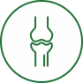

Суставы
-
Внутрисуставные инъекции
-
Эндопротезирование синовиальной жидкости

- Представляет собой процедуру внутрисуставного (интраартикулярного)
введения активного вещества, предназначенную для ускоренного полноценного восстановления костно-хрящевой
ткани, для стимуляции выработки синовиальной жидкости.
-
Изготовление индивидуальных ортопедических стелек
- Благодаря плантографии у травматолога-ортопеда можно выявить все
особенности стопы и на основе этого создать индивидуальную стельку. Использование таких стелек позволяет
достичь более правильной механики стопы, предупреждает деформацию стопы при нагрузках, разгружает
проблемные зоны на стопе, уменьшает боли в стопе.
-
Плазмотерапия
-
Метод лечения, основанный на введении богатой тромбоцитами плазмы, полученной из крови самого пациента.
Активизирует полноценное восстановление тканей организма без применения медикаментозных средств.
Частными
эффектами метода являются: усиление процессов регенерации на клеточном уровне, стимуляция образования
клеток соединительной (фибробластов), костной (остеобластов) и хрящевой тканей (хондроцитов), усиление
синтеза собственного коллагена и новых кровеносных сосудов в мягких тканях, улучшение кровообращения,
кислородного обмена и, как следствие, трофики тканей.
-
Периферическая магнитная стимуляция (ПМС)
- Физиотерапевтический метод лечения, основанный на способности
переменного магнитного поля изменять характеристики тока ионов в клетках организма. Беспрепятственно
проникая через кожу, магнитные импульсы воздействуют на локальные участки центральной нервной системы,
ускоряя передачу импульсов между нейронами. Это имеет ряд позитивных следствий: улучшается трофика
(питание) тканей, рассасываются отеки, купируются боли и воспалительные процессы, снимаются спазмы.
Одним из эффектов является повышение силы мышц, что позволяет использовать метод не только в лечебной
практике, но и в профессиональном спорте
-
Консультация врача-травматолога
-
Врач-травматолог – это специалист, занимающийся лечением механических повреждений, ожогов, болезней и
других нарушений опорно-двигательного аппарата. Также он обеспечивает профилактику травм, артритов и
артрозов.
-
УЗИ и цифровая рентгенография суставов
-
Обследование при помощи ультразвуковой диагностики и рентгенографии.
-
Диагностическая плантография
- На консультации травматолог-ортопед проводит диагностическую
плантографию на специальном аппарате-сканере для получения 2D-изображения стопы. Благодаря этому можно
выявить все особенности стопы и создать индивидуальную стельку. Использование таких стелек позволяет
достичь более правильной механики стопы, предупреждает деформацию стопы при нагрузках, разгружает
проблемные зоны на стопе, уменьшает боли в стопе.
-
Программа «Общее оздоровление»
-
Это комплекс лечебно-профилактических мероприятий, направленных на укрепление иммунитета, восстановление
природных сил и улучшение работы основных регуляторных систем организма. Последовательное и
взаимосвязанное выполнение процедур, включенных в программу, гармонизирует физиологический баланс,
улучшает общее состояние пациента, повышает жизненный тонус и устойчивость к негативному влиянию внешних
факторов.